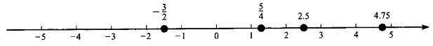

Section 2.1 The real number System
Subsection 2.1.1 The set of natural numbers
The history of numbers indicated that the first set of numbers used by the ancient human beings for counting purpose was the set of natural (counting) numbers.
|
Definition 2.1.1
The set of natural numbers is denoted by N and is described as N =\(\left\{ \ 1\ ,\ 2,\ 3,\ \ldots\ \right\}\)
|
i) Addition (+)
If two natural numbers a & b are added using the operation “+”, then the sum a+b is also a natural number. If the sum of the two natural numbers a & b is denoted by c, then we can write the operation as: c = a+b, where c is called the sum and a & b are called terms.
Example: 3+8 = 11, here 11 is the sum whereas 3 & 8 are terms.
ii) Multiplication (\(\))
If two natural numbers a & b are multiplied using the operation “\(\)”, then the product a\(\)b is also a natural number. If the product of the two natural numbers a & b is denoted by c, then we can write the operation as: c = a\(\)b, where c is called the product and a & b are called factors.
Example 2.1.3: 3\(\)4 = 12, here 12 is the product whereas 3 & 4 are factors.
Properties of addition and multiplication on the set of natural numbers
i. For any two natural numbers a & b, the sum a+b is also a natural number. For instance in the
above example, 3 and 8 are natural numbers, their sum 11 is also a natural number. In general, we
say that the set of natural numbers is closed under addition.
ii. For any two natural numbers a & b, a + b = b + a.
Example 2.1.1: 3+8 = 8+3 = 11. In general, we say that addition is commutative on the set of natural numbers.
iii. For any three natural numbers a, b & c, (a+b)+c = a +(b+c).
Example 2.1.2: (3+8)+6 = 3+(8+6) = 17. In general, we say that addition is associative on the set of natural numbers.
iv. For any two natural numbers a & b, the product a\(\)b is also a natural number. For instance in the above example, 3 and 4 are natural numbers, their product 12 is also a natural number. In general, we say that the set of natural numbers is closed under multiplication.
v. For any two natural numbers a & b, a\(\)b = b\(\)a.
Example 2.1.4: 3\(\)4 = 4\(\)3 = 12. In general, we say that multiplication is commutative on the set of natural numbers.
vi. For any three natural numbers a, b & c, (a\(\)b) \(\)c = a\(\) (b\(\)c).
Example 2.1.5: (2\(\)4) \(\)5 = 2\(\) (4\(\)5) = 40. In general, we say that multiplication is associative on the set of natural numbers.
vi. For any natural number a, it holds that a\(\)1 = 1\(\)a = a.
Example 2.1.6: 6\(\)1 = 1\(\)6 = 6. In general, we say that multiplication has an identity element on the set of natural numbers and 1 is the identity element.
vii. For any three natural numbers a, b & c, a\(\)(b+c) = (a\(\)b)+(a\(\)c).
Example 2.1.7: 3\(\)(5+7) = (3\(\)5)+ (3\(\)7) = 36. In general, we say that multiplication is distributive over addition on the set of natural numbers.
| Note: Consider two numbers a and b, we say a is greater than b denoted by a\(\)b if a – b is positive. |
- Order Relation in N
i) Transitive property:
For any three natural numbers a, b & c, \(a > b\ \land \ b > c\ \Rightarrow a > c\)
ii) Addition property:
For any three natural numbers a, b & c, \(a > b\ \Rightarrow \ a + c > b + c\)
iii) Multiplication property:
For any three natural numbers a, b and c, \(a > b\ \Rightarrow \ \text{ac} > \text{bc}\)
iv) Law of trichotomy
For any two natural numbers a & b we have \(a > b\ \text{or}\ a < b\ \text{or}\ a = b\text{.}\)
- Factors of a number
|
Definition 2.2
If \(a,\ b,\ c\ \in N\) such that \(\text{ab} = c\text{,}\) then a & b are factors (divisors) of c and c is called product (multiple) of a & b.
|
Example 2.8: Find the factors of 15.
Solution: Factors of 15 are 1, 3, 5, 15. \(\text{Or}\ \text{we}\ \text{can}\ \text{write}\ \text{it}\ \text{as}:\ F_{\text{15}} = \left\{ \ 1,\ 3,\ 5,\ \text{15}\ \right\}\)
|
Definition 2.3 A number \(a \in N\)is said to be
i. Even if it is divisible by 2.
ii. Odd if it is not divisible by 2.
iii. Prime if it has only two factors (1 and itself).
iv. Composite: if it has three or more factors.
|
Example 2.9: 2, 4, 6, . . . are even numbers
Example 2.10: 1, 3, 5, . . . are odd numbers
Example 2.11: 2, 3, 5, . . . are prime numbers
Example 2.12: 4, 6, 8, 9, . . . are composite numbers
| Remark: 1 is neither prime nor composite. |
- Prime Factorization
|
Definition 2.4
Prime factorization of a composite number is the product of all its prime factors.
|
Example 2.9:
\(a)\ 6 = 2 \times 3\) \(b)\ \text{30} = 2 \times 3 \times 5\) \(c)\ \text{12} = 2 \times 2 \times 3 = 2^{2} \times 3\) \(d)\ 8 = 2 \times 2 \times 2 = 2^{3}\) \(e)\ \text{180} = 2^{2} \times 3^{2} \times 5\)
| Fundamental Theorem of Arithmetic: |
|---|
| Every composite number can be expressed as a product of its prime factors. This factorization is unique except the order of the factors. |
- Greatest Common Factor (GCF)
|
Definition 2.5
The greatest common factor (GCF) of two numbers a & b is denoted by GCF (a, b) and is the greatest number which is a factor of each of the given number.
|
Note: If the GCF of two numbers is 1, then the numbers are called relatively prime.
Example 2.10: Consider the two numbers 24 and 60.
Therefore, GCF(24, 60) = 12.
This method of finding the GCF of two or more numbers is usually lengthy and time consuming. Hence an alternative method (Prime factorization method) is provided as below:
Step 1: Find the prime factorization of each of the natural numbers
Step 2: Form the GCF of the given numbers as the product of every factor that appears in each of the prime factorization but take the least number of times it appears.
Example 2.11: Consider the two numbers 24 and 60.
Step 2: The factors that appear in both cases are 2 and 3, but take the numbers with the least number of times.
Example 2.12: Consider the three numbers 20, 80 and 450.
Step 2: The factors that appear in all cases are 2 and 5, but take the numbers with the least number of times.
- Least Common Multiple (LCM)
|
Definition 2.6
The least common multiple (LCM) of two numbers a & b is denoted by LCM (a, b) and is the least number which is a multiple of each of the given number.
|
Example 2.13: Consider the two numbers 18 and 24.
Therefore, LCM (18, 24) = 72.
This method of finding the LCM of two or more numbers is usually lengthy and time consuming. Hence an alternative method (Prime factorization method) is provided as below:
Step 1: Find the prime factorization of each of the natural numbers
Step 2: Form the LCM of the given numbers as the product of every factor that appears in any of the prime factorization but take the highest number of times it appears.
Example 2.14: Consider the two numbers 18 and 24.
Step 2: The factors that appear in any case are 2 and 3, but take the numbers with the highest number of times.
Example 2.15: Consider the three numbers 20, 80 and 450.
Step 2: The factors that appear in any cases are 2 , 3 and 5, but take the numbers with the highest number of times.
- Well ordering Principle in the set of natural numbers
|
Proposition 2.7
Every non-empty subset of the set of natural numbers has smallest (least) element.
|
Example 2.16 \(\ A = \left\{ \ 2\ ,\ 3,\ 4,\ \cdots\ \right\}\ \subseteq \ N\text{.}\ \text{smallest}\ \text{element}\ \text{of}\ A = 2\text{.}\)
Note: The set of counting numbers including zero is called the set of whole numbers and is denoted by W. i.e W = \(\left\{ \ 0,\ 1\ ,\ 2,\ 3,\ \ldots\ \right\}\)
| Principle of Mathematical Induction |
Mathematical induction is one of the most important techniques used to prove in mathematics. It is used to check conjectures about the outcome of processes that occur repeatedly according to definite patterns. We will introduce the technique with examples.
|
For a given assertion involving a natural number n, if
i. the assertion is true for n = 1 (usually).
ii. it is true for n = k+1, whenever it is true for n = k (k\(\)1), then the assertion is true for every natural number n.
|
The method is used to prove different propositions involving positive integers using three steps:
Step1: Prove that \(T_{k}\) (usually\(T_{1}\)) holds true.
Step 2: Assume that \(T_{k}\) for k = n is true.
Step 3: Show that \(T_{k}\) is true for k = n+1.
Example 2.17 Show that \(\ 1 + 3 + 5 + \cdots + (2n - 1) = n^{2}\text{.}\)
Proof:
Example 2.18 Show that\(\ 1 + 2 + 3 + \cdots + (n) = \frac{n\ (n + 1)}{2}\text{.}\)
Proof:
Example 2.19 Show that\(\ 5^{n} + 6^{n} < 9^{n}\ \text{for}\ n \geq 2\text{.}\ \)
Proof:
Subsection 2.1.2 The set of Integers
As the knowledge and interest of human beings increased, it was important and obligatory to extend the natural number system. For instance to solve the equation x+1= 0, the set of natural numbers was not sufficient. Hence the set of integers was developed to satisfy such extended demands.
|
Definition 2.8
The set of integers is denoted by Z and described as Z = \(\left\{ \ \text{.}\ \text{.}\ \text{.}\ , - 2,\ - 1,\ 0,\ 1\ ,\ 2,\ \ldots\ \right\}\)
|
- Operations on the set of integers
i) Addition (+)
If two integers a & b are added using the operation “+”, then the sum a+b is also an integer. If the sum of the two integers a & b is denoted by c, then we can write the operation as: c = a+b, where c is called the sum and a & b are called terms.
Example 2.20: 4+9 = 13, here 13 is the sum whereas 4 & 9 are terms.
ii) Subtraction (\(-\))
For any two integers a & b, the operation of subtracting b from a, denoted by \(a - b\) is defined by \(a - b = a + ( - b)\text{.}\) This means that subtracting b from a is equivalent to adding the additive inverse of b to a.
Example 2.21: \(7 - 5 = 7 + ( - 5) = 2\)
iii) Multiplication (\(\))
If two integers a & b are multiplied using the operation “\(\)”, then the product a\(\)b is also an integer. If the product of the two integers a & b is denoted by c, then we can write the operation as: c = a\(\)b, where c is called the product and a & b are called factors.
Example 2.22: 4\(\)7 = 28, here 28 is the product whereas 4 & 7 are factors.
Properties of addition and multiplication on the set of integers
i. For any two integers a & b, the sum a+b is also an integer. For instance in the above example, 4 and 9 are integers, their sum 13 is also an integer. In general, we say that the set of integers is closed under addition.
ii. For any two integers a & b, a+b = b+a.
Example 2.23: 4+9 = 9+4 = 13. In general, we say that addition is commutative on the set of integers.
iii. For any three integers a, b & c, (a+b)+c = a+(b+c).
Example 2.24: (5+9)+8 = 5+(9+8) = 22. In general, we say that addition is associative on the set of integers.
iv. For any integer a, it holds that a+0 = 0+a = a.
Example 2.25: 7+0 = 0+7 = 7. In general, we say that addition has an identity element on the set of integers and 0 is the identity element.
v. For any integer a, it holds that \(a + ( - a) = - a + a = 0\text{.}\)
Example 2.26: 4+-4 = -4+4 = 0. In general, we say that every integer a has an additive inverse denoted by\(- a\text{.}\)
vi. For any two integers a & b, the product a\(\)b is also an integer. For instance in the above example, 4 and 7 are integers, their product 28 is also an integer. In general, we say that the set of integers is closed under multiplication.
vii. For any two integers a & b, a\(\)b = b\(\)a.
Example 2.27: 4\(\)7 = 7\(\)4 = 28. In general, we say that multiplication is commutative on the set of integers.
viii. For any three integers a, b & c, (a\(\)b) \(\)c = a\(\) (b\(\)c).
Example 2.28: (3\(\)5) \(\)4 = 3\(\) (5\(\)4) = 60. In general, we say that multiplication is associative on the set of integers.
ix. For any integer a, it holds that a\(\)1 = 1\(\)a = a.
Example 2.29: 5\(\)1 = 1\(\)5 = 5. In general, we say that multiplication has an identity element on the set of integers and 1 is the identity element.
x. For any three integers a, b & c, a\(\)(b+c) = (a\(\)b)+(a\(\)c).
Example 2.30: 4\(\)(5+6) = (4\(\)5)+ (4\(\)6) = 44. In general, we say that multiplication is distributive over addition on the set of integers.
- Order Relation in Z
i) Transitive property: For any three integers a, b & c, \(a > b\ \land \ b > c\ \Rightarrow a > c\)
ii) Addition property: For any three integers a, b & c, \(a > b\ \Rightarrow \ a + c > b + c\)
iii) Multiplication property: For any three integers a, b and c, where c>0, \(a > b\ \Rightarrow \ \text{ac} > \text{bc}\)
iv) Law of trichotomy: For any two integers a & b we have \(a > b\ \text{or}\ a < b\ \text{or}\ a = b\text{.}\)
| Exercise 2.1 |
|
1. Find an odd natural number x such that LCM (x, 40) = 1400.
2. There are between 50 and 60 number of eggs in a basket. When Loza counts by 3’s, there are 2 eggs left over. When she counts by 5’s, there are 4 left over. How many eggs are there in the basket?
3. The GCF of two numbers is 3 and their LCM is 180. If one of the numbers is 45, then find the second number.
4. Using Mathematical Induction, prove the following:
d) \(2 + 4 + 6 + \cdots + 2n = n(n + 1)\)
e) \(1^{2} + 2^{2} + 3^{2} + \cdots + n^{2} = \frac{n\ (n + 1)(2n + 1)}{6}\)
f) \(1^{3} + 2^{3} + 3^{3} + \cdots + n^{3} = \frac{n^{2}\ (n + 1)^{2}}{4}\)
g) \(\frac{1}{1 \times 2} + \frac{1}{2 \times 3} + \frac{1}{3 \times 4} + \cdots + \frac{1}{n(n + 1)} = \frac{n}{n + 1}\)
|
Subsection 2.1.3 The set of rational numbers
As the knowledge and interest of human beings increased with time, it was again necessary to extend the set of integers. For instance to solve the equation 2x+1= 0, the set of integers was not sufficient. Hence the set of rational numbers was developed to satisfy such extended needs.
| Definition 2.9 |
|---|
|
Any number that can be expressed in the form\(\frac{a}{b}\text{,}\) where a and b are integers and \(b \neq 0\text{,}\) is called a rational number. The set of rational numbers denoted by Q is described by
Q = \(\left\{ \ \frac{a}{b}:\ a\ \text{and}\ b\ \text{are}\ \text{integers}\ \text{and}\ b \neq 0\ \right\}\) .
|
Notes:
i. From the expression \(\frac{a}{b},\ \) \(a\) is called numerator and \(b\) is called denominator.
ii. A rational number \(\frac{a}{b}\) is said to be in lowest form if GCF (a, b) = 1.
2.1.3.1 Operations on the set of rational numbers
i) Addition (+)
If two rational numbers \(\frac{a}{b}\) and \(\frac{c}{d}\) are added using the operation “+”, then the sum defined as \(\frac{a}{b} + \frac{c}{d} = \frac{\text{ad} + \text{bc}}{\text{bd}}\) is also a rational number.
Example 2.31: \(\frac{1}{2} + \frac{3}{5} = \frac{\text{11}}{\text{10}}\)
ii) Subtraction (\(-\))
For any two rational numbers \(\frac{a}{b}\)& \(\frac{c}{d}\text{,}\) the operation of subtracting \(\frac{c}{d}\) from \(\frac{a}{b}\text{,}\) denoted by \(\frac{a}{b}\)- \(\frac{c}{d}\)is defined by \(\frac{a}{b}\)-\(\frac{c}{d}\) = \(\frac{a}{b}\)+(-\(\frac{c}{d}\)).
Example 2.32: \(\frac{1}{2} - \frac{3}{5} = \frac{- 1}{\text{10}}\)
iii) Multiplication (\(\))
If two rational numbers \(\frac{a}{b}\) and \(\frac{c}{d}\) are multiplied using the operation “\(\)”, then the product defined as \(\frac{a}{b} \times \frac{c}{d} = \frac{\text{ac}}{\text{bd}}\) is also a rational number.
Example 2.33: \(\frac{1}{2} \times \frac{3}{5} = \frac{3}{\text{10}}\)
iv) Division (\(\))
For any two rational numbers \(\frac{a}{b}\)&\(\frac{c}{d}\text{,}\) dividing \(\frac{a}{b}\)by \(\frac{c}{d}\) is defined by
Example 2.34: \(\frac{1}{2} \div \frac{3}{5} = \frac{1}{2} \times \frac{5}{3} = \frac{5}{6}\)
Properties of addition and multiplication on the set of rational numbers
Let \(\frac{a}{b}\text{,}\) \(\frac{c}{d}\) and \(\frac{e}{f}\) be three rational numbers, then
i. The set of rational numbers is closed under addition and multiplication.
ii. Addition and multiplication are both commutative on the set of rational numbers.
iii. Addition and multiplication are both associative on the set of rational numbers.
iv. 0 is the additive identity
i.e., \(\frac{a}{b}\)+ 0 = 0+\(\frac{a}{b}\) = \(\frac{a}{b}\text{.}\)
v. Every rational number has an additive inverse.
i.e., \(\frac{a}{b}\)+ \(( - \frac{a}{b})\) = \(\frac{- a}{b}\)+\(\frac{a}{b}\) = 0.
vi. 1 is the multiplicative identity
i.e., \(\frac{a}{b}\)\(\)1 = 1\(\)\(\frac{a}{b}\) = \(\frac{a}{b}\text{.}\)
vii. Every non-zero rational number has a multiplicative inverse.
i.e., \(\frac{a}{b}\)\(\) \(\frac{b}{a}\) = \(\frac{b}{a}\)\(\)\(\frac{a}{b}\) = 1.
2.1.3.2 Order Relation in Q
i) Transitive property
For any three rational numbers\(\frac{a}{b}\text{,}\) \(\frac{c}{d}\)& \(\frac{e}{f}\) \(\frac{a}{b} > \frac{c}{d}\ \land \ \frac{c}{d} > \frac{e}{f}\ \Rightarrow \frac{a}{b} > \frac{e}{f}\text{.}\)
ii) Addition property
For any three rational numbers\(\frac{a}{b}\text{,}\) \(\frac{c}{d}\)& \(\frac{e}{f}\) \(\frac{a}{b} > \frac{c}{d}\ \Rightarrow \frac{a}{b} + \frac{e}{f} > \frac{c}{d} + \frac{e}{f}\text{.}\)
iii) Multiplication property
For any three rational numbers\(\frac{a}{b}\text{,}\) \(\frac{c}{d}\text{,}\) \(\frac{e}{f}\)and \(\frac{e}{f} > 0\)
iv) Law of trichotomy
For any two rational numbers \(\frac{a}{b}\)& \(\frac{c}{d}\)we have \(\frac{a}{b} > \frac{c}{d}\ \text{or}\ \frac{a}{b} < c\frac{\ }{d}\ \text{or}\ \frac{a}{b} = \frac{c}{d}\text{.}\)
Decimal representation of rational numbersA rational number \(\frac{a}{b}\) can be written in decimal form using long division.
2.1.3.3.1 Terminating decimals
Example 2.35: Express the fraction number \(\frac{\text{25}}{4}\)in decimal form.
Non-terminating periodic decimals
Example 2.36: Express the fraction number \(\frac{\text{25}}{3}\)in decimal form.
Now we will see how to convert decimal numbers in to their fraction forms. In earlier mathematics topics, we have seen that multiplying a decimal by 10 pushes the decimal point to the right by one position and in general, multiplying a decimal by 10n pushes the decimal point to the right by n positions. We will use this fact for the succeeding topics.
Fraction form of decimal numbersA rational number which is written in decimal form can be converted to a fraction form as \(\frac{a}{b}\) in lowest (simplified) form, where a and b are relatively prime.
Terminating decimals| Consider any terminating decimal number d. Suppose d terminates n digits after the decimal point. d can be converted to its fraction form as below: |
Example 2.37: Convert the terminating decimal 3.47 to fraction form.
Non-terminating periodic decimals| Consider any non-terminating periodic decimal number d. Suppose d has k non-terminating digits and p terminating digits after the decimal point. d can be converted to its fraction form as below: |
Example 2.38: Convert the non-terminating periodic decimal\(\text{42}\text{.}5\overline{\text{38}}\) to fraction form.
Solution: k = 1, p = 2.
Note: From the above two cases, we can conclude that both terminating decimals and non-terminating periodic decimals are rational numbers. (Why? Justify).
Non-terminating and non-periodic decimalsSome decimal numbers are neither terminating nor non-terminating periodic. Such types of numbers are called irrational numbers.
Example 2.39: 62.757757775….
Example 2.40: Show that \(\sqrt{2}\) is an irrational number.
Proof:
\(\begin{matrix}
\ \text{Suppose}\ \sqrt{2}\ \text{is}\ a\ \text{rational}\ \text{number} \\
\ \Rightarrow \sqrt{2} = \frac{a}{b},\ \text{where}\ \text{GCF}(a,\ b) = 1 \\
\ \Rightarrow 2 = \frac{a^{2}}{b^{2}} \\
\ \Rightarrow a^{2} = 2b^{2}\text{.}\text{.}\text{.}\text{.}\text{.}\text{.}\text{.}\text{.}\text{.}( \ast ) \\
\ \Rightarrow a^{2}\ \text{is}\ \text{even} \\
\ \Rightarrow a\ \text{is}\ \text{even} \\
\ \Rightarrow a\ = 2n\ \text{.}\text{.}\text{.}\text{.}\text{.}\text{.}\text{.}\text{.}\text{.}\text{.}\text{.}\text{.}\text{.}\text{.}(\text{**}) \\
\end{matrix}\)
\(\begin{matrix}
\ \text{Putting}\ \text{this}\ \text{in}\ ( \ast )\ \text{we}\ \text{get}:\ \\
\Rightarrow 4n^{2} = 2b^{2} \\
\Rightarrow b^{2} = 2n^{2} \\
\Rightarrow b^{2}\ \text{is}\ \text{even} \\
\Rightarrow b\ \text{is}\ \text{even} \\
\Rightarrow b = 2m\text{.}\text{.}\text{.}\text{.}\text{.}\text{.}\text{.}\text{.}\text{.}\text{.}\text{.}\text{.}(\text{***}) \\
\end{matrix}\)
From (**) and (***) we get a contradiction that GCF (a, b) = 1 which implies that \(\sqrt{2\ }\) is not a rational number.
Therefore, \(\sqrt{2\ }\) is an irrational number.
Subsection 2.1.4 The set of real numbers
| Definition 2.10 |
|---|
|
A number is called a real number if and only if it is either a rational number or an irrational number.
The set of real numbers denoted by \(\Re\) can be described as the union of the set of rational and irrational numbers. i.e \(\Re\)= {x : x is a rational number or an irrational number}.
|
There is a 1-1 correspondence between the set of real numbers and the number line (For each point in the number line, there is a corresponding real number and vice-versa).
Operations on the set of real numbersi) Addition (+)
If two real numbers are added using the operation “+”, then the sum is also a real number.
ii) Subtraction (\(-\))
For any two real numbers \(a\)& \(b\text{,}\) the operation of subtracting \(b\) from \(a\text{,}\) denoted by \(a - b\)is defined by \(a - b\) = \(a\)+(\(-\)\(b\)).
iii) Multiplication (\(\))
If two real numbers \(a\) and \(b\) are multiplied using the operation “\(\)”, then the product defined as \(a \times b = \text{ab}\) is also a real number.
iv) Division (\(\))
For any two real numbers \(a\)& \(b\text{,}\) dividing \(a\)by \(b\)is defined by \(a\ \div b = a \times \frac{1}{b},\ b \neq 0\text{.}\)
Properties of addition and multiplication on the set of real numbers
Let \(a\text{,}\) \(b\) and \(c\) be three real numbers, then
i. The set of real numbers is closed under addition and multiplication.
ii. Addition and multiplication are commutative on the set of real numbers.
iii. Addition and multiplication are associative on the set of real numbers.
iv. 0 is the additive identity
i.e., \(a\)+ 0 = 0+\(a\) = \(a\text{.}\)
v. Every real number has an additive inverse.
i.e., \(a\)+ \(( - a)\) = \(- a\)+\(a\) = 0.
vi. 1 is the multiplicative identity
i.e., \(a\)\(\)1 = 1\(\)\(a\) = \(a\text{.}\)
vii. Every non-zero real number has a multiplicative inverse.
i.e., \(a\)\(\) \(\frac{1}{a}\) = \(\frac{1}{a}\)\(\)\(a\) = 1.
The real number and the number lineOne of the most important properties of the real number is that it can be represented graphically by points on a straight line. The point 0 is termed as the origin. Points to the right of 0 are called positive real numbers and points to the left of 0 are called negative real numbers. Each point on the number line corresponds a unique real number and vice-versa.

Geometrically we say a is greater than b if a is located to the right of b on the number line.
Order Relation in Ri) Transitive property: For any three real numbers\(a\text{,}\) \(b\)& \(c\text{,}\) \(a > \ b\ \land \ b > c\ \Rightarrow a > c\text{.}\)
ii) Addition property: For any three real numbers\(a\text{,}\) \(b\)& \(c\text{,}\) \(a > b\ \Rightarrow a + c > b + c\text{.}\)
iii) Multiplication property: For any three real numbers\(a\text{,}\) \(b\text{,}\) \(c\)and \(c > 0\text{,}\) we have \(a > b\ \Rightarrow \text{ac} > \text{bc}\text{.}\)
iv) Law of trichotomy: For any two real numbers \(a\)& \(b\)we have \(a > b\ \text{or}\ a < b\ \text{or}\ a = b\text{.}\)
Summary of the real number system

- Intervals
Let a and b be two real numbers such that a\(\)b, then the intervals which are subsets of R with end points a and b are denoted and defined as below:
\(i\text{.}\ (a,\ b)\ = \left\{ \ x:\ a < x < b \right\}\) open interval from a to b.
\(\text{ii}\text{.}\ \lbrack a,\ b\rbrack\ = \left\{ \ x:\ a \leq x \leq b \right\}\) closed interval from a to b.
\(\text{iii}\text{.}\ (a,\ b\rbrack\ = \left\{ \ x:\ a < x \leq b \right\}\) open-closed interval from a to b.
\(\text{iv}\text{.}\ \lbrack a,\ b)\ = \left\{ \ x:\ a \leq x < b \right\}\) closed-open interval from a to b.
- Upper bounds and lower bounds
|
Definition 2.11
i. A point \(a \in R\)is said to be an upper bound of A iff \(x \leq a\) for all \(x \in A\text{.}\)
ii. An upper bound of A is said to be least upper bound (lub) iff it is the least of all upper bounds.
iii. A point \(a \in R\)is said to be lower bound of A iff \(x \geq a\) for all \(x \in A\text{.}\)
ii. A lower bound of A is said to be greatest lower bound (glb) iff it is the greatest of all lower bounds.
|
Example 2.41\(\ \text{Consider}\ \text{the}\ \text{set}\ A = \lbrack 2,\ 5) \subseteq \Re\text{.}\)
Example 2.42: Consider the set A = \(\left\{ \ \frac{1}{n}\ \right\}\) for n\(\in N\text{.}\)
Solution: \(A = \left\{ \ 1,\ \frac{1}{2},\ \frac{1}{3},\ \cdots \right\}\)
Based on the above definitions, we can define the completeness property of real numbers as below.
- Completeness property of real number (R)
| Completeness property of real numbers states that: Every non-empty subset of \(\Re\ \) that has lower bounds has glb and every non-empty subset of \(\Re\ \)that has upper bounds has a lub. |
Exercise 2.2 |
|
1. Express each of the following rational numbers as decimal:
2. Write each of the following as decimal and then as a fraction:
a) three tenths b) four thousands
3. Write each of the following in meters as a fraction and then as a decimal
a) 4mm b) 6cm and 4mm c) 56cm and 4mm
4. Classify each of the following as terminating or non-terminating periodic
5. Convert the following decimals to fractions:
6. Determine whether the following are rational or irrational:
7. Which of the following statements are true and which of them are false?
a) The sum of any two rational numbers is rational
b) The sum of any two irrational numbers is irrational
c) The product of any two rational numbers is rational
d) The product of any two irrational numbers is irrational
11. Find two rational numbers between \(13\ \text{and}\ 12\text{.}\)
|